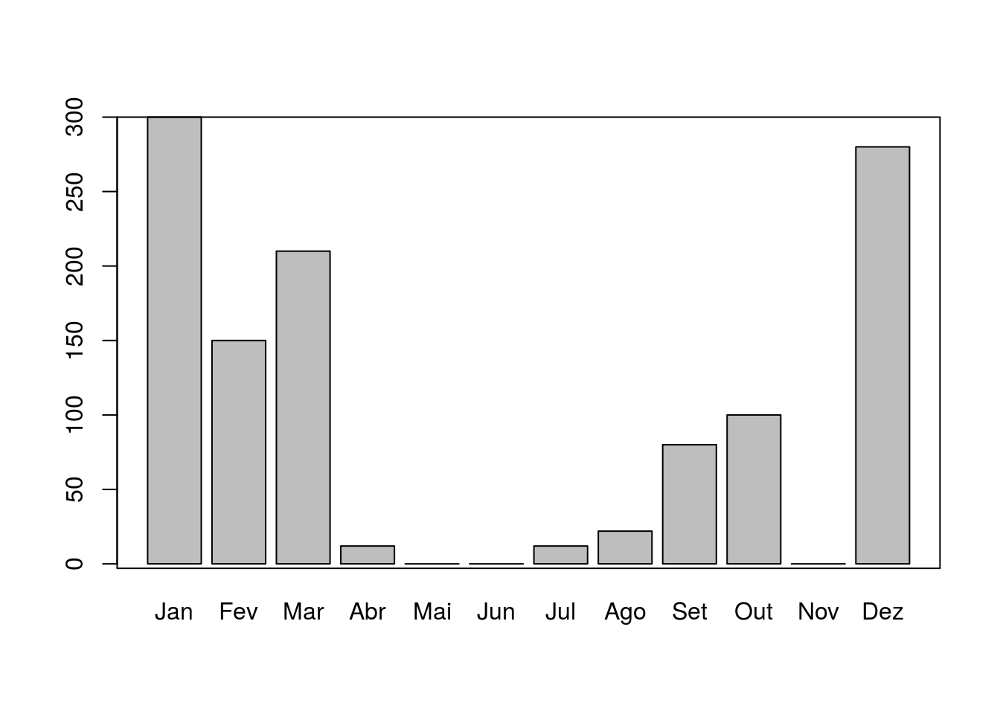
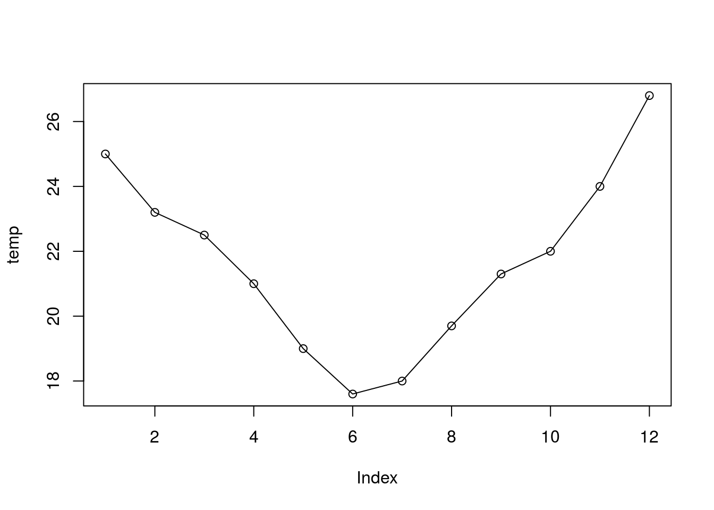

7.1 Vetor
Um vetor é uma coleção de elementos. Os vetores são amplamente usados e compõem a estrutura básica de dados do R, por ser uma linguagem vetorizada.
Os vetores podem ser de dois tipos: vetores atômicos e listas.
7.1.1 Vetores atômicos
Os vetores atômicos são constituem a estrutura de dados mais simples do R (como se fossem os átomos do R). Um vetor atômico é uma coleção de elementos, em que todos são do mesmo tipo de dado (todos double, ou integer, ou logical, etc).
Como linguagem vetorizada, as operações são aplicadas a cada elemento do vetor automaticamente, sem a necessidade de laços (ou loopings) ao longo do vetor. Esse conceito pode ser estranho para quem vem de outras linguagens, mas é uma das grandes vantagens do R.
Vetores não tem dimensões, ou seja não existem é um vetor linha ou vetor coluna.
7.1.1.1 Propriedades
typeof()para descobrir o tipo de dadolength()para descobrir o tamanho de um tipo de dadoattributes(informações acionais específicas do dado), entre eles o atributo mais comum está onames().
7.1.1.2 Criação
Vetores atômicos são geralmente criados com c(), abreviatura para o verbo combinar ou concatenar.
# vetor numérico
vetor_num <- c(5, 2.5, 4.5)
# Note o sufixo L que distingue variaveis "double" de "integers"
vetor_int <- c(1L, 6L, 10L)
# Vetor logico
vetor_log <- c(TRUE, FALSE, TRUE, FALSE)
# Vetor de caracteres
vetor_char <- c("Analise de dados", "ambientais com o R")Vetores atômicos podem ser criados a partir de outros vetores aninhados entre si pela função c().
v1 <- 1 # vetor com 1 elemento
v2 <- c(2) # vetor com 1 elemento
v3 <- c(4, 6) # vetor com 2 elementoFormas diferentes para criação de vetor que resultam num mesmo vetor:
7.1.1.3 Coerção de vetores
Você pode manualmente forçar um tipo de vetor para outro usando funções de coerção: as.character(), as.double(),as.integer(), as.logical(). Coerção frequentemente acontece automaticamente, mas geralmente será mostrada uma mensagem quando ocorrer.
Vamos usar a coerção no seguinte caso. Imagine um vetor com valores de chuva mensal de um ano e outro vetor com os meses do ano. Note a diferença da forma como criamos o vetor meses e o vetor months. Como descobrir o número de meses sem chuva nesse ano?
# vetor com nomes criados com 1 comando
meses <- c(
jan = 1, fev = 2, mar = 3, abr = 4, mai = 5, jun = 6,
jul = 7, ago = 8, set = 9, out = 10, nov = 11, dez = 12
)
meses
#> jan fev mar abr mai jun jul ago set out nov dez
#> 1 2 3 4 5 6 7 8 9 10 11 12
# vetor definido e depois adiciona-se o nome das variáveis
months <- c(1, 2, 3, 4, 5, 6, 7, 8, 9, 10, 11, 12)
names(months) <- c("Jan", "Feb", "Mar", "Apr", "May", "Jun", "Jul", "Aug", "Sep", "Oct", "Nov", "Dec")
months
#> Jan Feb Mar Apr May Jun Jul Aug Sep Oct Nov Dec
#> 1 2 3 4 5 6 7 8 9 10 11 12
# o atibuto mais comum de um vetor
attributes(meses)
#> $names
#> [1] "jan" "fev" "mar" "abr" "mai" "jun" "jul" "ago" "set" "out" "nov" "dez"
length(meses)
#> [1] 12
# Vetor com dados de prec
chuva <- c(100, 0, 20, 140, 110, 50, 90, 0, 0, 10, 0, 6)
length(chuva)
#> [1] 12
# quando nao choveu?
seco <- chuva == 0
seco
#> [1] FALSE TRUE FALSE FALSE FALSE FALSE FALSE TRUE TRUE FALSE TRUE FALSE
# coerção de lógico para numérico
seco01 <- as.numeric(seco)
# seco01 <- as.integer(seco)
seco01
#> [1] 0 1 0 0 0 0 0 1 1 0 1 0
# total de meses secos no ano
sum(seco01)
#> [1] 4
# também funciona com vetores lógicos
sum(seco)
#> [1] 47.1.1.4 Nomeando vetores
Nós podemos nomear um vetor de 3 formas:
Durante a criação
Modificando um vetor
Criando um vetor modificado
Nomes devem ser únicos (sem repetições), porque para filtragem de elementos de um vetor ou a seleção de um subconjunto (razão pela qual usam-se os names) retornará somente o primeiro elemento que tiver nome repetido.
# Durante a criação:
x <- c(a = 1, b = 2, c = 3)
x
#> a b c
#> 1 2 3
# Modificando um vetor:
x <- 1:3
names(x) <- c("a", "b", "c")
x
#> a b c
#> 1 2 3
# Criando um vetor modificado
x <- setNames(1:3, c("a", "b", "c"))
x
#> a b c
#> 1 2 3Nem todos elementos precisam ter nomes. Se os nomes são faltantes, names() retornará um string vazia ("") para aqueles elementos. Se todos forem faltantes, names() retornará NULL.
Podemos criar um vetor sem nomes usando a função unname(x), ou remover names com names(x) <- NULL.
7.1.2 Operações com vetores
Para multiplicar cada elemento de um vetor por um valor é usar o operador de multiplicação (*). O mesmo procedimento se aplica as demais operações de soma, subtração, divisão, exponenciação e etc.
x <- 1:10
x * 3
#> [1] 3 6 9 12 15 18 21 24 27 30
x + 2
#> [1] 3 4 5 6 7 8 9 10 11 12
x - 3
#> [1] -2 -1 0 1 2 3 4 5 6 7
x / 4
#> [1] 0.25 0.50 0.75 1.00 1.25 1.50 1.75 2.00 2.25 2.50
2 ^ (x / 4)
#> [1] 1.189207 1.414214 1.681793 2.000000 2.378414 2.828427 3.363586 4.000000
#> [9] 4.756828 5.656854
x ^ 2
#> [1] 1 4 9 16 25 36 49 64 81 100
sqrt(x)
#> [1] 1.000000 1.414214 1.732051 2.000000 2.236068 2.449490 2.645751 2.828427
#> [9] 3.000000 3.162278Operações vetoriais podem ser estendidas para mais de um vetor.
# criando 2 vetores de mesmo tamanho
x <- 1:10
y <- -5:4
# somando-os
x + y
#> [1] -4 -2 0 2 4 6 8 10 12 14
x - y
#> [1] 6 6 6 6 6 6 6 6 6 6
x * y
#> [1] -5 -8 -9 -8 -5 0 7 16 27 40
x / y
#> [1] -0.2 -0.5 -1.0 -2.0 -5.0 Inf 7.0 4.0 3.0 2.5
x ^ y
#> [1] 1.000000e+00 6.250000e-02 3.703704e-02 6.250000e-02 2.000000e-01
#> [6] 1.000000e+00 7.000000e+00 6.400000e+01 7.290000e+02 1.000000e+04
2 ^ x
#> [1] 2 4 8 16 32 64 128 256 512 1024
x %% y
#> [1] -4 -2 0 0 0 NA 0 0 0 2
# tamanho dos vetores
length(x)
#> [1] 10
length(y)
#> [1] 10
length(x + y)
#> [1] 10Uma peculiaridade do R é o tratamento de operações com vetores de tamanhos diferentes. O vetor menor é reciclado, de forma que seus elementos sejam repetidos em ordem até atingirem o tamanho do vetor mais longo envolvido na operação.
Se o vetor mais longo não é múltiplo do mais curto, o R imprime um aviso.
v1 <- c(3, 5, 88, 90)
v2 <- c(2, 1, 3)
v1 + v2
#> Warning in v1 + v2: longer object length is not a multiple of shorter object
#> length
#> [1] 5 6 91 92A reciclagem é intrinsecamente usada em operações envolvendo vetores.
O número 4 nesse caso é reciclado 4 vezes e então multiplicado por cada elemento do vetor v1.
Avisos e erros:
v1 <- c(3, 5, 88, 90)
srt(v1)
#> Error in srt(v1): could not find function "srt"
sqrt(-v1)
#> Warning in sqrt(-v1): NaNs produced
#> [1] NaN NaN NaN NaNComparações também funcionam com vetores.
x <= 5
#> [1] TRUE TRUE TRUE TRUE TRUE FALSE FALSE FALSE FALSE FALSE
x > y
#> [1] TRUE TRUE TRUE TRUE TRUE TRUE TRUE TRUE TRUE TRUE
x < y
#> [1] FALSE FALSE FALSE FALSE FALSE FALSE FALSE FALSE FALSE FALSEEntre os operadores lógicos vistos (Tabela 6.2) alguns deles não foram aplicados em exemplos. Vamos então usar o operador %in% para verificar se um vetor está contido parcial ou totalmente em outro vetor.
# operador está contido em
2:4 %in% x
#> [1] TRUE TRUE TRUE
# 2:4 são elementos de x?
is.element(2:4, x)
#> [1] TRUE TRUE TRUEA função nchar() também funciona sobre cada elemento do vetor. Esse é mais um exemplo de função vetorizada do R.
7.1.2.1 Operadores any e all
vetor <- c(0, 1, -1, -2, 3, 5, -5)
all(vetor < 0) # todas as posições são maiores que 0 ?
#> [1] FALSE
any(vetor > 0) # alguma posição é maior que 0?
#> [1] TRUEAmbas as funções sintetizam a informação:
all()verifica se a condição avaliada é válida para todos elementos do vetor;any()verifica se a condição avaliada é válida para pelo menos um dos elementos do vetor;
As funções fornecem um único valor (vetor lógico de tamanho 1) para resumir ou descrever o resultado da condição aplicada ao vetor.
7.1.3 Sequências
Vimos nas seções anteriores que é muito simples criar sequências de números inteiros com o operador :. Nesta seção veremos outras formas de gerar sequências, como uma sequência de números não inteiros e sequências de números repetidos.
7.1.3.1 Sequências de números inteiros
Sequências de números formam um vetor. Há diversas formas de se gerar sequências no R. Para gerar uma sequência de 1 até 365, em vez de escrevermos cada número e combiná-los usando c(1,2,3,...,365), podemos usar o operador : da seguinte forma:
# dias do ano
dda <- 1:365
dda
#> [1] 1 2 3 4 5 6 7 8 9 10 11 12 13 14 15 16 17 18
#> [19] 19 20 21 22 23 24 25 26 27 28 29 30 31 32 33 34 35 36
#> [37] 37 38 39 40 41 42 43 44 45 46 47 48 49 50 51 52 53 54
#> [55] 55 56 57 58 59 60 61 62 63 64 65 66 67 68 69 70 71 72
#> [73] 73 74 75 76 77 78 79 80 81 82 83 84 85 86 87 88 89 90
#> [91] 91 92 93 94 95 96 97 98 99 100 101 102 103 104 105 106 107 108
#> [109] 109 110 111 112 113 114 115 116 117 118 119 120 121 122 123 124 125 126
#> [127] 127 128 129 130 131 132 133 134 135 136 137 138 139 140 141 142 143 144
#> [145] 145 146 147 148 149 150 151 152 153 154 155 156 157 158 159 160 161 162
#> [163] 163 164 165 166 167 168 169 170 171 172 173 174 175 176 177 178 179 180
#> [181] 181 182 183 184 185 186 187 188 189 190 191 192 193 194 195 196 197 198
#> [199] 199 200 201 202 203 204 205 206 207 208 209 210 211 212 213 214 215 216
#> [217] 217 218 219 220 221 222 223 224 225 226 227 228 229 230 231 232 233 234
#> [235] 235 236 237 238 239 240 241 242 243 244 245 246 247 248 249 250 251 252
#> [253] 253 254 255 256 257 258 259 260 261 262 263 264 265 266 267 268 269 270
#> [271] 271 272 273 274 275 276 277 278 279 280 281 282 283 284 285 286 287 288
#> [289] 289 290 291 292 293 294 295 296 297 298 299 300 301 302 303 304 305 306
#> [307] 307 308 309 310 311 312 313 314 315 316 317 318 319 320 321 322 323 324
#> [325] 325 326 327 328 329 330 331 332 333 334 335 336 337 338 339 340 341 342
#> [343] 343 344 345 346 347 348 349 350 351 352 353 354 355 356 357 358 359 360
#> [361] 361 362 363 364 365
# sequencia de anos
anos <- 1961:1990
anos
#> [1] 1961 1962 1963 1964 1965 1966 1967 1968 1969 1970 1971 1972 1973 1974 1975
#> [16] 1976 1977 1978 1979 1980 1981 1982 1983 1984 1985 1986 1987 1988 1989 1990
# sequencia de inteiros decrescente
si_dec <- 10:-10
si_dec
#> [1] 10 9 8 7 6 5 4 3 2 1 0 -1 -2 -3 -4 -5 -6 -7 -8
#> [20] -9 -10
# sequencia de numeros não inteiros
seqn <- 1.5:10
seqn
#> [1] 1.5 2.5 3.5 4.5 5.5 6.5 7.5 8.5 9.5
c(seqn, 10)
#> [1] 1.5 2.5 3.5 4.5 5.5 6.5 7.5 8.5 9.5 10.07.1.3.2 Sequências de números não inteiros
Mas para gerar uma sequencia de números não inteiros há uma função específica para tal tarefa.
# igual a c(snum, 10), mas usando o seq
(snum_b <- seq(from = 1.5, to = 10, by = 0.5))
#> [1] 1.5 2.0 2.5 3.0 3.5 4.0 4.5 5.0 5.5 6.0 6.5 7.0 7.5 8.0 8.5
#> [16] 9.0 9.5 10.0Exemplos de sequência de anos, meses e dias.
# vetor com de anos decimais (2 valores por dia)
anos_dec <- seq(2010, 2011, length.out = 365 * 2)
# para ver só o início do vetor ao invés de todo o vetor
head(anos_dec)
#> [1] 2010.000 2010.001 2010.003 2010.004 2010.005 2010.007
# mas não dá pra ver a parte decimal, vamos alterar as opções
# aumentando as casas decimais
options(digits = 6)
# verifique agora
head(anos_dec)
#> [1] 2010.00 2010.00 2010.00 2010.00 2010.01 2010.01
# só os primeiros 30 elementos
head(anos_dec, 30)
#> [1] 2010.00 2010.00 2010.00 2010.00 2010.01 2010.01 2010.01 2010.01 2010.01
#> [10] 2010.01 2010.01 2010.02 2010.02 2010.02 2010.02 2010.02 2010.02 2010.02
#> [19] 2010.02 2010.03 2010.03 2010.03 2010.03 2010.03 2010.03 2010.03 2010.04
#> [28] 2010.04 2010.04 2010.04
# para ver só o final do vetor yrFrac
tail(anos_dec)
#> [1] 2010.99 2010.99 2011.00 2011.00 2011.00 2011.00
# para ver só os último 50 elementos do yrFrac
tail(anos_dec, 50)
#> [1] 2010.93 2010.93 2010.94 2010.94 2010.94 2010.94 2010.94 2010.94 2010.94
#> [10] 2010.95 2010.95 2010.95 2010.95 2010.95 2010.95 2010.95 2010.95 2010.96
#> [19] 2010.96 2010.96 2010.96 2010.96 2010.96 2010.96 2010.97 2010.97 2010.97
#> [28] 2010.97 2010.97 2010.97 2010.97 2010.98 2010.98 2010.98 2010.98 2010.98
#> [37] 2010.98 2010.98 2010.98 2010.99 2010.99 2010.99 2010.99 2010.99 2010.99
#> [46] 2010.99 2011.00 2011.00 2011.00 2011.00
# pentadas
pent <- seq(from = 1, to = 365, by = 5)
# dencendios
decd <- seq(from = 1, to = 365, by = 10)
# fracoes de dia
frac_d30mn <- seq(0, 365, length.out = 365 * 48) + 1
head(frac_d30mn, 48 * 2)
#> [1] 1.00000 1.02083 1.04167 1.06250 1.08334 1.10417 1.12501 1.14584 1.16668
#> [10] 1.18751 1.20835 1.22918 1.25001 1.27085 1.29168 1.31252 1.33335 1.35419
#> [19] 1.37502 1.39586 1.41669 1.43752 1.45836 1.47919 1.50003 1.52086 1.54170
#> [28] 1.56253 1.58337 1.60420 1.62504 1.64587 1.66670 1.68754 1.70837 1.72921
#> [37] 1.75004 1.77088 1.79171 1.81255 1.83338 1.85422 1.87505 1.89588 1.91672
#> [46] 1.93755 1.95839 1.97922 2.00006 2.02089 2.04173 2.06256 2.08340 2.10423
#> [55] 2.12506 2.14590 2.16673 2.18757 2.20840 2.22924 2.25007 2.27091 2.29174
#> [64] 2.31257 2.33341 2.35424 2.37508 2.39591 2.41675 2.43758 2.45842 2.47925
#> [73] 2.50009 2.52092 2.54175 2.56259 2.58342 2.60426 2.62509 2.64593 2.66676
#> [82] 2.68760 2.70843 2.72927 2.75010 2.77093 2.79177 2.81260 2.83344 2.85427
#> [91] 2.87511 2.89594 2.91678 2.93761 2.95845 2.97928
tail(frac_d30mn, 48 * 2)
#> [1] 364.021 364.042 364.062 364.083 364.104 364.125 364.146 364.167 364.187
#> [10] 364.208 364.229 364.250 364.271 364.292 364.312 364.333 364.354 364.375
#> [19] 364.396 364.417 364.437 364.458 364.479 364.500 364.521 364.542 364.562
#> [28] 364.583 364.604 364.625 364.646 364.667 364.687 364.708 364.729 364.750
#> [37] 364.771 364.792 364.812 364.833 364.854 364.875 364.896 364.917 364.937
#> [46] 364.958 364.979 365.000 365.021 365.042 365.062 365.083 365.104 365.125
#> [55] 365.146 365.167 365.187 365.208 365.229 365.250 365.271 365.292 365.312
#> [64] 365.333 365.354 365.375 365.396 365.417 365.437 365.458 365.479 365.500
#> [73] 365.521 365.542 365.562 365.583 365.604 365.625 365.646 365.667 365.687
#> [82] 365.708 365.729 365.750 365.771 365.792 365.812 365.833 365.854 365.875
#> [91] 365.896 365.917 365.937 365.958 365.979 366.000
# diferentes funções para gerar uma sequência
an <- c(1, 7, 2, 5, 3, 2)
# gerando uma sequencia a partir de um número
seq_len(length.out = 6)
#> [1] 1 2 3 4 5 6
# gerando uma sequência a partir de um número
seq(6)
#> [1] 1 2 3 4 5 6
# de acordo com o tamanho do vetor gera-se uma sequencia
seq(along = an)
#> [1] 1 2 3 4 5 6
seq(along = 0) # ! melhor opção para gerar sequencias do tamanho do vetor
#> [1] 1
seq(0) # ! cuidado, veja ?seq para entender a razão desse resultado inusitado
#> [1] 1 0
# conflito entre parâmetros
# a <-seq(from = -5, to = 5, by = 0.05, length.out=200)
s5by <- seq(from = -5, to = 5, by = 0.05)
length(s5by)
#> [1] 201
tail(s5by)
#> [1] 4.75 4.80 4.85 4.90 4.95 5.00
s5len <- seq(from = -5, to = 5, length.out = 200)
length(s5len)
#> [1] 200
tail(s5len)
#> [1] 4.74874 4.79899 4.84925 4.89950 4.94975 5.000007.1.3.3 Sequências de números repetidos
rep_t4 <- rep(1:2, times = 4)
rep_t4
#> [1] 1 2 1 2 1 2 1 2
rep_e31 <- rep(1:12, each = 31)
rep_e31
#> [1] 1 1 1 1 1 1 1 1 1 1 1 1 1 1 1 1 1 1 1 1 1 1 1 1 1
#> [26] 1 1 1 1 1 1 2 2 2 2 2 2 2 2 2 2 2 2 2 2 2 2 2 2 2
#> [51] 2 2 2 2 2 2 2 2 2 2 2 2 3 3 3 3 3 3 3 3 3 3 3 3 3
#> [76] 3 3 3 3 3 3 3 3 3 3 3 3 3 3 3 3 3 3 4 4 4 4 4 4 4
#> [101] 4 4 4 4 4 4 4 4 4 4 4 4 4 4 4 4 4 4 4 4 4 4 4 4 5
#> [126] 5 5 5 5 5 5 5 5 5 5 5 5 5 5 5 5 5 5 5 5 5 5 5 5 5
#> [151] 5 5 5 5 5 6 6 6 6 6 6 6 6 6 6 6 6 6 6 6 6 6 6 6 6
#> [176] 6 6 6 6 6 6 6 6 6 6 6 7 7 7 7 7 7 7 7 7 7 7 7 7 7
#> [201] 7 7 7 7 7 7 7 7 7 7 7 7 7 7 7 7 7 8 8 8 8 8 8 8 8
#> [226] 8 8 8 8 8 8 8 8 8 8 8 8 8 8 8 8 8 8 8 8 8 8 8 9 9
#> [251] 9 9 9 9 9 9 9 9 9 9 9 9 9 9 9 9 9 9 9 9 9 9 9 9 9
#> [276] 9 9 9 9 10 10 10 10 10 10 10 10 10 10 10 10 10 10 10 10 10 10 10 10 10
#> [301] 10 10 10 10 10 10 10 10 10 10 11 11 11 11 11 11 11 11 11 11 11 11 11 11 11
#> [326] 11 11 11 11 11 11 11 11 11 11 11 11 11 11 11 11 12 12 12 12 12 12 12 12 12
#> [351] 12 12 12 12 12 12 12 12 12 12 12 12 12 12 12 12 12 12 12 12 12 12
rep_t13 <- rep(c("chuva", "sol"), times = c(1, 3))
rep_t13
#> [1] "chuva" "sol" "sol" "sol"
rep_t13_t4 <- rep(rep(c("chuva", "sol"), times = c(1, 3)), times = 4)
rep_t13_t4
#> [1] "chuva" "sol" "sol" "sol" "chuva" "sol" "sol" "sol" "chuva"
#> [10] "sol" "sol" "sol" "chuva" "sol" "sol" "sol"7.1.4 Indexação de vetores
Os elementos de um vetor são indexados e para acessá-los usamos a notação de índices do R.
Podemos selecionar partes de um vetor por números (posição do elemento), caracteres (nome) e vetores lógicos.
Através do operador [ podemos acessar ou filtrar elementos de um vetor. O operador colchete [ aplicado a um vetor retornará um vetor.
Considere os seguintes vetores como exemplo:
# vetor de chuva mensal para um dado ano
prec <- c(300, 150, 210, 12, 0, 0, 12, 22, 80, 100, 0, 280)
meses <- c("Jan", "Fev", "Mar", "Abr", "Mai", "Jun", "Jul", "Ago", "Set", "Out", "Nov", "Dez")
names(prec) <- meses
prec
#> Jan Fev Mar Abr Mai Jun Jul Ago Set Out Nov Dez
#> 300 150 210 12 0 0 12 22 80 100 0 280
# gráfico de barras
barplot(prec)
box()
# temperatura do ar média mensal para um dado ano
temp <- c(25, 23.2, 22.5, 21, 19, 17.6, 18, 19.7, 21.3, 22, 24, 26.8)
names(temp) <- meses
temp
#> Jan Fev Mar Abr Mai Jun Jul Ago Set Out Nov Dez
#> 25.0 23.2 22.5 21.0 19.0 17.6 18.0 19.7 21.3 22.0 24.0 26.8
plot(temp, type = "o")
Como selecionar o valor de chuva e temperatura só para janeiro?
Usando a seguinte sintaxe:
vetor[i]
onde i representa os elementos a serem selecionados.
7.1.4.1 Indexação por vetores inteiros
7.1.4.1.1 Positivos
Para selecionar o valor de chuva e temperatura só para janeiro, digitamos:
Como selecionar os últimos valores dos vetores de chuva e temperatura?
# vetor de temperatura do ar média mensal de um ano qualquer
temp_dez <- temp[length(temp)]
temp_dez
#> Dez
#> 26.8
prec_dez <- prec[length(prec)]
prec_dez
#> Dez
#> 280Como selecionar os valores de chuva do trimestre JJA e de temperatura para o trimestre DJF?
sel_prec <- c(6, 7, 8)
# vetor de chuva JJA
prec_jja <- prec[sel_prec]
prec_jja
#> Jun Jul Ago
#> 0 12 22
# total de chuva trimestral nesse ano
prect_jja_tot <- sum(prec_jja)
prect_jja_tot
#> [1] 34
# vetor de temperatura DJF
sel_temp <- c(12, 1, 2)
temp_djf <- temp[sel_temp]
temp_djf
#> Dez Jan Fev
#> 26.8 25.0 23.2
# temp média trimestral nesse ano
temp_djf_med <- mean(temp_djf)
temp_djf_med
#> [1] 257.1.4.1.2 Negativos
Como selecionar todos valores menos o primeiro e o último?
# exceto o primeiro e ultimo
prec[-c(1, length(prec))]
#> Fev Mar Abr Mai Jun Jul Ago Set Out Nov
#> 150 210 12 0 0 12 22 80 100 0
# exceto os 3 primeiros meses
temp[-c(1:3)]
#> Abr Mai Jun Jul Ago Set Out Nov Dez
#> 21.0 19.0 17.6 18.0 19.7 21.3 22.0 24.0 26.8
# exceto os 3 últimos meses
temp[-c(length(temp):(length(temp) - 2))]
#> Jan Fev Mar Abr Mai Jun Jul Ago Set
#> 25.0 23.2 22.5 21.0 19.0 17.6 18.0 19.7 21.37.1.4.2 Indexação por nomes
7.1.4.3 Indexação por vetores lógicos
Vamos criar um vetor lógico e usá-lo para exemplificar a seleção lógica de elementos de um vetor.
vetor_l <- c(TRUE, FALSE, FALSE, TRUE, TRUE, FALSE, TRUE, FALSE, TRUE, FALSE, FALSE,
TRUE)
meses[vetor_l]
#> [1] "Jan" "Abr" "Mai" "Jul" "Set" "Dez"Os elementos de vetor_l correspondentes a TRUE foram selecionados. Aplicando-se a função sum() a um vetor lógico obtemos o total de elementos verdadeiros:
Vamos considerar agora a seguinte forma do vetor lógico (vetor_l) e relembrar da coerção de vetores.
# vetor lógico
vetor_l <- c(TRUE, FALSE)
meses[vetor_l]
#> [1] "Jan" "Mar" "Mai" "Jul" "Set" "Nov"
vetor_l <- c(TRUE, FALSE, FALSE)
meses[vetor_l]
#> [1] "Jan" "Abr" "Jul" "Out"
prec[c(TRUE, FALSE)]
#> Jan Mar Mai Jul Set Nov
#> 300 210 0 12 80 0
temp[c(rep(FALSE, 3), TRUE)]
#> Abr Ago Dez
#> 21.0 19.7 26.8A indexação pode ser feita também por comparações:
# vetor prec
prec
#> Jan Fev Mar Abr Mai Jun Jul Ago Set Out Nov Dez
#> 300 150 210 12 0 0 12 22 80 100 0 280
# teste para chuva > 80 mm/mês
prec > 80
#> Jan Fev Mar Abr Mai Jun Jul Ago Set Out Nov Dez
#> TRUE TRUE TRUE FALSE FALSE FALSE FALSE FALSE FALSE TRUE FALSE TRUE
# salvando resultado do teste
above80 <- prec > 80
# extraindo valores atendidos ao teste
prec[above80]
#> Jan Fev Mar Out Dez
#> 300 150 210 100 280
# teste para meses com chuva abaixo da média mensal
(prec_med <- mean(prec))
#> [1] 97.1667
# salvando resultado do teste
(below_avg <- prec < prec_med)
#> Jan Fev Mar Abr Mai Jun Jul Ago Set Out Nov Dez
#> FALSE FALSE FALSE TRUE TRUE TRUE TRUE TRUE TRUE FALSE TRUE FALSE
# extraindo valores que atendem a condição
prec[below_avg]
#> Abr Mai Jun Jul Ago Set Nov
#> 12 0 0 12 22 80 0
# extraindo os 3 primeiros meses com prec abaixo da média
prec[below_avg][1:3]
#> Abr Mai Jun
#> 12 0 0
# forma equivalente em uma linha só
prec[prec < mean(prec)][1:3]
#> Abr Mai Jun
#> 12 0 0
# teste para meses com prec diferente de zero
prec[prec != 0]
#> Jan Fev Mar Abr Jul Ago Set Out Dez
#> 300 150 210 12 12 22 80 100 2807.1.4.4 Indexação com múltiplas condições
Nos exemplo acima vimos como buscar os os elementos de um vetor para apenas uma condição. Entretanto frequentemente precisamos testar mais condições. Por exemplo, para condições do tipo:
- \(0.5 < prec \leq 100\)
- \(temp < 5\) ou \(temp \geq 25\)
precisamos usar os operadores relacionais:
&e&&("e")|e||("ou")
A ordem das operações pode ser controladas por parênteses. Os operadores & e | são vetorizados (retornam vetores de mesmo tamanho que os vetores testados).
As diferenças entre os operadores são mostradas nos exemplos a seguir.
# prec
prec
#> Jan Fev Mar Abr Mai Jun Jul Ago Set Out Nov Dez
#> 300 150 210 12 0 0 12 22 80 100 0 280
# combinação de operador lógico e relacional
below100 <- prec > 0 & prec <= 100
prec_cond1 <- prec[below100]
prec_cond1
#> Abr Jul Ago Set Out
#> 12 12 22 80 100A forma dupla (&& ou ||) compara somente um elemento de cada lado, enquanto a forma normal (& e |), compara cada elemento dos vetores em cada lado.
a <- c(1, 1, 0, 1)
b <- c(2, 1, 0, 1)
# forma normal verifica cada elemento de a e cada elemento de b
a == 1 & b == 1
#> [1] FALSE TRUE FALSE TRUE
# forma dupla verifica somente o primeiro elemento de a e o primeiro elemento de
# b retornando somente um resultado
a == 1 && b == 1
#> [1] FALSE| a | b | a==1 | b==1 | a == 1 & b == 1 | a == 1 && b == 1 |
|---|---|---|---|---|---|
| 1 | 2 | TRUE | FALSE | FALSE | FALSE |
| 1 | 1 | TRUE | TRUE | TRUE | |
| 0 | 0 | FALSE | FALSE | FALSE | |
| 1 | 1 | TRUE | TRUE | TRUE |
Podem haver mais que duas condições a serem testadas. As condições podem ser combinadas usando múltiplos & ou |. As diferentes condições podem ser agrupadas por parênteses assim como operações matemáticas. Sem parênteses, a ordem das operações é semelhante a das operações matemáticas:
- PEMDAS: Parênteses > Expoentes > Multiplicação > Divisão > Adição e Subtração
Onde &é equivalente à multiplicação e | é equivalente à adição, logo e tem precedência sobre ou.
# vetor de horas
horas <- 0:23
# vetor de temperaturas horárias
tar_hor <- c(
19.9, 19.8, 19.5, 19.4, 19.4, 19.3,
19.2, 19, 19.2, 19.5, 20.1, 20.6, 20.9,
21.8, 22.5, 22.6, 22.5, 22, 21.4, 20.1,
20, 19.8, 19.6, 19.4
)
# gráfico do varição horária da temperatura do ar
plot(horas, tar_hor, type = "o", pch = 20)
# temperaturas noturnas abaixo de 20ºC
(night_below20 <- (horas < 6 | horas > 18) & tar_hor < 20)
#> [1] TRUE TRUE TRUE TRUE TRUE TRUE FALSE FALSE FALSE FALSE FALSE FALSE
#> [13] FALSE FALSE FALSE FALSE FALSE FALSE FALSE FALSE FALSE TRUE TRUE TRUE
tar_hor[night_below20]
#> [1] 19.9 19.8 19.5 19.4 19.4 19.3 19.8 19.6 19.4
# destacando no gráfico
points(
x = horas[night_below20],
y = tar_hor[night_below20],
pch = 20, # tipo de símbolo para os ponts
col = "blue", # cor do símbolo
cex = 2
) # tamanho do ponto
# temperaturas abaixo de 20ºC que não ocorreram a noite
day_below20 <- tar_hor < 20 & !night_below20
points(horas[day_below20], tar_hor[day_below20], pch = 20, col = "red", cex = 2)
# adicionando linha horizontal ao longo da temperatura = 20ºC
abline(h = 20, col = "gray")
Vimos que a filtragem consiste em extrair elementos de um vetor que satisfaça uma (ou várias) condição(ões). Entretanto, em alguns casos, o interesse é na posição dentro do vetor na qual a condição é verdadeira Nós podemos localizar essas ocorrências usando a função which():
# prec sem nomes
names(prec) <- NULL
# combinação de operador lógico e relacional
below100
#> Jan Fev Mar Abr Mai Jun Jul Ago Set Out Nov Dez
#> FALSE FALSE FALSE TRUE FALSE FALSE TRUE TRUE TRUE TRUE FALSE FALSE
which(below100)
#> Abr Jul Ago Set Out
#> 4 7 8 9 10
# qual os meses em que a chuva foi acima da media
which(prec > prec_med)
#> [1] 1 2 3 10 12
prec[which(prec > prec_med)]
#> [1] 300 150 210 100 280
# Qual a temp quando a chuva ou a temp foi acima da media?
sel <- which(prec > prec_med | !temp < mean(temp))
sel
#> Jan Fev Mar Out Nov Dez
#> 1 2 3 10 11 12
prec[sel]
#> [1] 300 150 210 100 0 280
# quais posições do vetor prec não choveu
which(prec == 0)
#> [1] 5 6 11
# quando ocorreu a prec max
which(prec == max(prec))
#> [1] 1
# equivalente a ...
which.max(prec)
#> [1] 1
# seleciona só a primeira ocorrência!
which.min(prec)
#> [1] 5
prec
#> [1] 300 150 210 12 0 0 12 22 80 100 0 280Um outro operador útil para comparação entre vetores é o operador %in%, que pode ser interpretado como "está contido em". O resultado é um vetor de mesmo tamanho que o vetor à esquerda do teste.
# compare o tamanho dos vetores resultantes
which(meses %in% c("JAN", "Feb", "Mar"))
#> [1] 3
# note a diferença
which(c("JAN", "Feb", "Mar") %in% meses)
#> [1] 3
cond <- names(temp) %in% c("Jun", "Jul", "Ago")
quais <- which(cond)
quais
#> [1] 6 7 8
prec[cond]
#> [1] 0 12 22
prec[quais]
#> [1] 0 12 227.1.5 Substituição de elementos de um vetor
# posição a ser alterada
pos <- 10
# valor da temperatura naquela posição
old_temp <- temp[pos]
old_temp
#> Out
#> 22
# vetor de temperatura
temp
#> Jan Fev Mar Abr Mai Jun Jul Ago Set Out Nov Dez
#> 25.0 23.2 22.5 21.0 19.0 17.6 18.0 19.7 21.3 22.0 24.0 26.8
# substituição do valor original por um novo valor
new_temp <- 30
# alterando temperatura do mês de outubro
temp[pos] <- new_temp
temp
#> Jan Fev Mar Abr Mai Jun Jul Ago Set Out Nov Dez
#> 25.0 23.2 22.5 21.0 19.0 17.6 18.0 19.7 21.3 30.0 24.0 26.8A substituição também pode ser feita também pelo nome das variáveis.
prec
#> [1] 300 150 210 12 0 0 12 22 80 100 0 280
prec["Mai"] <- 5
temp
#> Jan Fev Mar Abr Mai Jun Jul Ago Set Out Nov Dez
#> 25.0 23.2 22.5 21.0 19.0 17.6 18.0 19.7 21.3 30.0 24.0 26.8
temp[c("Mai", "Jul")] <- temp[c("Mai", "Jul")] + 2
temp
#> Jan Fev Mar Abr Mai Jun Jul Ago Set Out Nov Dez
#> 25.0 23.2 22.5 21.0 21.0 17.6 20.0 19.7 21.3 30.0 24.0 26.87.1.6 Criação de vetores com vector
Outra forma de se criar vetores é através da função vector().
# criação de vetor v
v <- 3
v
#> [1] 3
# adicionando elementos
v[2] <- 100
v
#> [1] 3 100
v[5] <- 6
v
#> [1] 3 100 NA NA 6
# adicionando elementos de vetores
x <- c(88, 5, 12, 13)
x <- c(x[1:3], 168, x[4]) # insere 168 antes do 13
x
#> [1] 88 5 12 168 13
# outra opção
k <- vector()
class(k)
#> [1] "logical"
# vetor k existe?
ls()
#> [1] "a" "a_sn" "above80" "an"
#> [5] "anos" "anos_dec" "b" "below_avg"
#> [9] "below100" "chuva" "cond" "cte"
#> [13] "day_below20" "dda" "decd" "desc"
#> [17] "frac_d30mn" "horas" "k" "meses"
#> [21] "months" "new_temp" "night_below20" "old_temp"
#> [25] "oper" "pcks" "pent" "pos"
#> [29] "prec" "prec_cond1" "prec_dez" "prec_jan"
#> [33] "prec_jja" "prec_med" "prect_jja_tot" "quais"
#> [37] "rblue" "rep_e31" "rep_t13" "rep_t13_t4"
#> [41] "rep_t4" "s5by" "s5len" "seco"
#> [45] "seco01" "sel" "sel_prec" "sel_temp"
#> [49] "seqn" "si_dec" "snum_b" "tar_hor"
#> [53] "temp" "temp_dez" "temp_djf" "temp_djf_med"
#> [57] "temp_jan" "v" "v_123" "v_123a"
#> [61] "v_123b" "v1" "v2" "v3"
#> [65] "vetor" "vetor_char" "vetor_int" "vetor_l"
#> [69] "vetor_log" "vetor_num" "x" "y"
#> [73] "z"
# alocando o valor 45 no 3º elemento de k
k[3] <- 45
k
#> [1] NA NA 45
class(k)
#> [1] "numeric"
# diminuindo o tamanho de k
length(k)
#> [1] 3
length(k) <- 2
k
#> [1] NA NA
length(k) <- 0
k
#> numeric(0)
class(k)
#> [1] "numeric"
is.null(k)
#> [1] FALSE
# exemplo
temp <- c(25, 23.2, 22.5, 21, 19, 17.6, 18, 19.7, 21.3, 22, 24, 26.8)
temp_orig <- temp
# mostrando o vetor temp
temp
#> [1] 25.0 23.2 22.5 21.0 19.0 17.6 18.0 19.7 21.3 22.0 24.0 26.8
temp[]
#> [1] 25.0 23.2 22.5 21.0 19.0 17.6 18.0 19.7 21.3 22.0 24.0 26.8
# substituir todos elementos do vetor temp por um vetor com apenas um valor
temp <- 0
temp
#> [1] 0
# vamos redefinir temp e comparar o anterior com o obtido com o próximo comando
temp <- temp_orig
temp[1:length(temp)] <- 0
temp
#> [1] 0 0 0 0 0 0 0 0 0 0 0 0
# qual diferença de x <- 0 e x[] <-0 ?
temp <- temp_orig
temp[] <- 0
temp
#> [1] 0 0 0 0 0 0 0 0 0 0 0 0
# Um vetor com tamanho pre-definido e do tipo numeric
umvetor <- vector(mode = "numeric", length = 100)
umvetor
#> [1] 0 0 0 0 0 0 0 0 0 0 0 0 0 0 0 0 0 0 0 0 0 0 0 0 0 0 0 0 0 0 0 0 0 0 0 0 0
#> [38] 0 0 0 0 0 0 0 0 0 0 0 0 0 0 0 0 0 0 0 0 0 0 0 0 0 0 0 0 0 0 0 0 0 0 0 0 0
#> [75] 0 0 0 0 0 0 0 0 0 0 0 0 0 0 0 0 0 0 0 0 0 0 0 0 0 0
# populando o vetor
umvetor[1] <- 10
umvetor[10] <- 100
umvetor
#> [1] 10 0 0 0 0 0 0 0 0 100 0 0 0 0 0 0 0 0
#> [19] 0 0 0 0 0 0 0 0 0 0 0 0 0 0 0 0 0 0
#> [37] 0 0 0 0 0 0 0 0 0 0 0 0 0 0 0 0 0 0
#> [55] 0 0 0 0 0 0 0 0 0 0 0 0 0 0 0 0 0 0
#> [73] 0 0 0 0 0 0 0 0 0 0 0 0 0 0 0 0 0 0
#> [91] 0 0 0 0 0 0 0 0 0 07.1.7 Vetores nulos e elementos faltantes
Seja qual for a razão, ao realizar um experimento em condições reais sempre haverá situações em que não conhecemos o valor de uma determinada variável. Por exemplo, a série de uma variável meteorológica medida em estação de superfície, sempre ocorrem datas em que não há registro da variável. Falha instrumental, dado não coletado pelo observador, falta de energia, são causas inerentes de falhas em séries climáticas de longo prazo.
No R dados faltantes são representados pela string NA.
v1 <- c(1:8, NA)
v1 > 5 # NA sai na resposta
#> [1] FALSE FALSE FALSE FALSE FALSE TRUE TRUE TRUE NA
# teste lógico com o operador idêntico "=="
v1 == NA
#> [1] NA NA NA NA NA NA NA NA NA
# não funcionou, porque há funções específicas para vetores com NA
onde_falta <- is.na(v1)
# função apropriada p/ checar se tem NAs
faltante <- which(is.na(v1))
v1[-faltante]
#> [1] 1 2 3 4 5 6 7 8
# ou
v1[!onde_falta]
#> [1] 1 2 3 4 5 6 7 8
# vamos calcular a média de v1
sum(v1) / length(v1)
#> [1] NA
# vamos remover valores NA
sum(v1[-faltante]) / length(v1[-faltante])
#> [1] 4.5
sum(v1[!onde_falta]) / length(v1[!onde_falta])
#> [1] 4.5
# mas o R possui a função mean
mean(v1)
#> [1] NA
# não retornou o que desejamos, removendo as posicoes dos dados faltantes
mean(v1[-faltante])
#> [1] 4.5
# ok, mas olhando o help ...
# ?mean
mean(v1, na.rm = TRUE)
#> [1] 4.5
# definir como faltante todos elementos de v1
v1[] <- NA
v1
#> [1] NA NA NA NA NA NA NA NA NA
length(v1)
#> [1] 9
# vetor com dados faltantes indicados por -999
# substituir onde é -999 por NA
x <- c(-999, 10, 15, -999, 50)
x == -999
#> [1] TRUE FALSE FALSE TRUE FALSE
x[x == -999] <- NA
# total de dados faltantes
sum(!is.na(x))
#> [1] 37.1.8 Diferença entre NA e NULL
O NULL é um tipo de dado especial do R.
# v1 existe ?
ls()
#> [1] "a" "a_sn" "above80" "an"
#> [5] "anos" "anos_dec" "b" "below_avg"
#> [9] "below100" "chuva" "cond" "cte"
#> [13] "day_below20" "dda" "decd" "desc"
#> [17] "faltante" "frac_d30mn" "horas" "k"
#> [21] "meses" "months" "new_temp" "night_below20"
#> [25] "old_temp" "onde_falta" "oper" "pcks"
#> [29] "pent" "pos" "prec" "prec_cond1"
#> [33] "prec_dez" "prec_jan" "prec_jja" "prec_med"
#> [37] "prect_jja_tot" "quais" "rblue" "rep_e31"
#> [41] "rep_t13" "rep_t13_t4" "rep_t4" "s5by"
#> [45] "s5len" "seco" "seco01" "sel"
#> [49] "sel_prec" "sel_temp" "seqn" "si_dec"
#> [53] "snum_b" "tar_hor" "temp" "temp_dez"
#> [57] "temp_djf" "temp_djf_med" "temp_jan" "temp_orig"
#> [61] "umvetor" "v" "v_123" "v_123a"
#> [65] "v_123b" "v1" "v2" "v3"
#> [69] "vetor" "vetor_char" "vetor_int" "vetor_l"
#> [73] "vetor_log" "vetor_num" "x" "y"
#> [77] "z"
exists("v1")
#> [1] TRUE
# vamos anular todo v1
v1 <- NULL
ls()
#> [1] "a" "a_sn" "above80" "an"
#> [5] "anos" "anos_dec" "b" "below_avg"
#> [9] "below100" "chuva" "cond" "cte"
#> [13] "day_below20" "dda" "decd" "desc"
#> [17] "faltante" "frac_d30mn" "horas" "k"
#> [21] "meses" "months" "new_temp" "night_below20"
#> [25] "old_temp" "onde_falta" "oper" "pcks"
#> [29] "pent" "pos" "prec" "prec_cond1"
#> [33] "prec_dez" "prec_jan" "prec_jja" "prec_med"
#> [37] "prect_jja_tot" "quais" "rblue" "rep_e31"
#> [41] "rep_t13" "rep_t13_t4" "rep_t4" "s5by"
#> [45] "s5len" "seco" "seco01" "sel"
#> [49] "sel_prec" "sel_temp" "seqn" "si_dec"
#> [53] "snum_b" "tar_hor" "temp" "temp_dez"
#> [57] "temp_djf" "temp_djf_med" "temp_jan" "temp_orig"
#> [61] "umvetor" "v" "v_123" "v_123a"
#> [65] "v_123b" "v1" "v2" "v3"
#> [69] "vetor" "vetor_char" "vetor_int" "vetor_l"
#> [73] "vetor_log" "vetor_num" "x" "y"
#> [77] "z"
v1
#> NULL
# NULL
vetor1 <- c()
vetor2 <- NULL
is.null(c(vetor1, vetor2))
#> [1] TRUE
# vetor1 e vetor2 são equivalentes?
identical(vetor1, vetor2)
#> [1] TRUE
# remoção de elementos de um vetor com NULL
a <- c(10, 2, NA, 20)
a
#> [1] 10 2 NA 20
typeof(a)
#> [1] "double"
# remover de a o dado faltante
a <- a[!is.na(a)]
a
#> [1] 10 2 20
# é possível remover um elemento com o NULL?
a[length(a)] <- NULL
#> Error in a[length(a)] <- NULL: replacement has length zero
a
#> [1] 10 2 20
a <- a[-length(a)]
a
#> [1] 10 2
typeof(a)
#> [1] "double"
# anulando a
a <- NULL
# qual modo de um objeto nulo?
typeof(a)
#> [1] "NULL"
# qual modo de NA?
b <- NA
b
#> [1] NA
typeof(b)
#> [1] "logical"
length(a)
#> [1] 0
length(b)
#> [1] 1